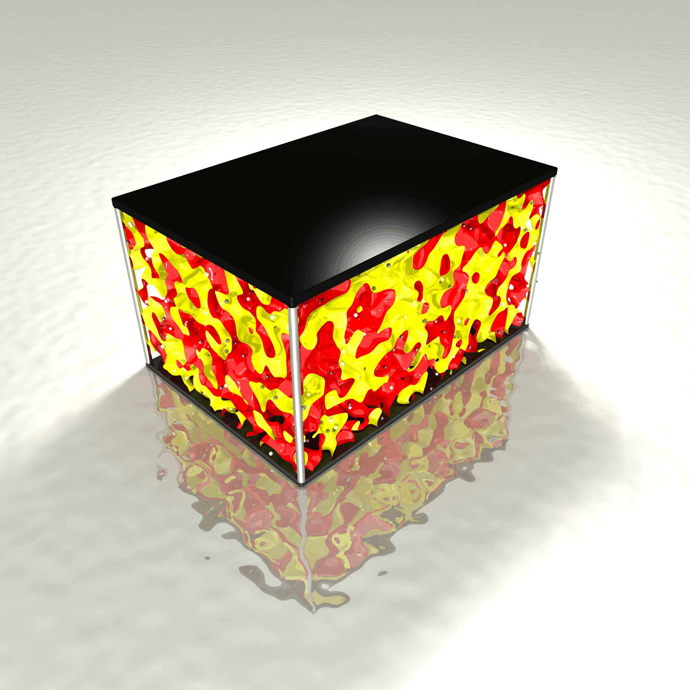

About¶
Academic use should cite relevant papers.
Marcus D. Hanwell, Tamika A. Madison, Geoffrey R. Hutchison. “Charge Transport in Imperfect Organic Field Effect Transistors: Effects of Explicit Defects and Electrostatics.” J. Phys. Chem. C 2010 114(48) 20417-20423. http://dx.doi.org/10.1021/jp104416a
Tamika A. Madison, Adam G. Gagorik, Geoffrey R. Hutchison. “Charge Transport in Imperfect Organic Field Effect Transistors: Effects of Charge Traps.” J. Phys. Chem. C 2012 116(22) 11852-11858. http://dx.doi.org/10.1021/jp207421n
Adam G. Gagorik, Geoffrey R. Hutchison. “Simulating Charge Injection and Dynamics in Micro-Scale Organic Field-Effect Transistors.” J. Phys. Chem. C 2012 116(40) 21232-21239. http://dx.doi.org/10.1021/jp306597n
Adam G. Gagorik, Jacob W. Mohin, Tomasz Kowalewski, Geoffrey R. Hutchison. “Monte Carlo Simulations of Charge Transport in 2D Organic Photovoltaics.” J. Phys. Chem. Lett 2013 4(1) 36-42. http://dx.doi.org/10.1021/jz3016292
Adam G. Gagorik, Jacob W. Mohin, Tomasz Kowalewski, Geoffrey R. Hutchison. “Effects of Delocalized Charges on Organic Photovoltaics: Nanoscale 3D Monte Carlo Simulations.” Adv. Func. Mater. 2014. http://dx.doi.org/10.1002/adfm.201402332
